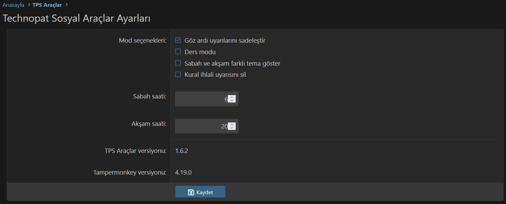
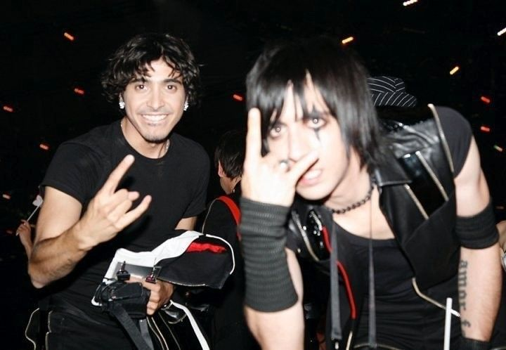

Çınar Yılmaz
- High school student
- Turkish competitive programmer
- Developer in Artado Software
Social
- Email: cinaryilmaz.gnu@mail.com
- Artado Forum: u/Cinar
- Codeforces: 023
- Monkeytype: Tisin
- Linkedin: cinaryilmaz
Certificates
C1 English Certification
Languages

Turkish
Native
English
C1 (Advanced)
German
A1 or pre-A1 (Beginner)
Greek
A1 or pre-A1 (Beginner, stopped learning for now)Skills
-

Programming
I have experiences in building website backends, tools and other things in multiple programming languages, which mostly include Python and C++.
-

Competitive Programming and Mathematics
I have multiple badges in various mathematics and informatics competitions
Year Competition Field/branch Medal 2021 Istanbul Science Olimpiads (ISBO) Informatics - Middle School Bronze 2022 TÜBİTAK National Science Olimpiads Informatics - Middle School Bronze 2022 MSFL Mathematics Competition Mathematics - Middle School Honorable Mention 2022 Istanbul Science Olimpiads (ISBO) Informatics - Middle School Silver 2023 TÜBİTAK National Science Olimpiads Informatics - Middle School Silver 2024 Istanbul Science Olimpiads (ISBO) Informatics - High School Bronze
Education
Pendik Fatih Anatolian High School (PFAL).
I'm still studying here and I'll graduate in 2027. I got in this school with a LGS score of 455.19 (out of 500) and the minimum score of 2023 to get in this school was 451.47. A 455.19 score equals a percentile rank of %5,60 and it is known that there were 1,030,195 test-takers in LGS in 2023, so my rank is about 57,690.
My Works
Artado Project
It's not my own project, but I work in the Artado Project team and I've been contributing to Artado Project since June 2022. The project's trying to create an privacy-respecting ecosystem and I really recommend using its projects, especially Artado Search.
View ProjectCamroku
It's a big project I used to work on, nowadays it's a dead project. It included some very complex projects like an operating system (Toryus), a programming language (QoLang), a blog script written in my own language (Camlog, my favorite web project so far), and a chatting web app (Selups).
View Project
Toryus
An operating system written in C for mainly educative purposes. I stopped working on it after things got too hard for me. It's based on Arus, an Artado project that's made by me, and Arus is based on Ember, which is a long-gone Camroku project.

QoLang
An experimental programming language written in Python. It includes a nice syntax, some built-in libraries, ability to write your own libraries using QoLang or Python, and you could built CGI web apps with some tricks too. I haven't been working on this project for a quite long time, but it's not officially dead.
View ProjectCamlog
A medium-like blog script written in QoLang. It features a user system (you can allow/disallow for external users to create accounts using the config), and writing texts in its own markup language called QoMar. It uses SQLite for database, and uses Bootstrap for front-end. I haven't been working on this project for a long time, too.
View ProjectSelups
A discontinued chatting web app, written by me and myold friend Akif. It uses MongoDB for database and socket.io for server-client communication.
View Projectlivetex
A live editor for LaTeX, written in Javascript. Mainly made for my own usage, and may not be for an average end-user
View ProjectModifications
I LOVE modifying and theming stuff, especially websites. I've made some modifications for some websites, and I'm still doing it. Here are some of my works:
Technopat Sosyal Araçlar / TPS Utils
An utility userscript for the Turkish forum Technopat Sosyal. It features many things for cleaning the view and improving the user experience.
View Userscript in Greasy Fork Music
Here's my Spotify profile for a more detailed view.
maNga
I'm a big fan of maNga!!
Here's my favorite song by maNga:
Metal and rock
I listen to a lot of songs by very varying bands, but here's my top 5 currently (unsorted)